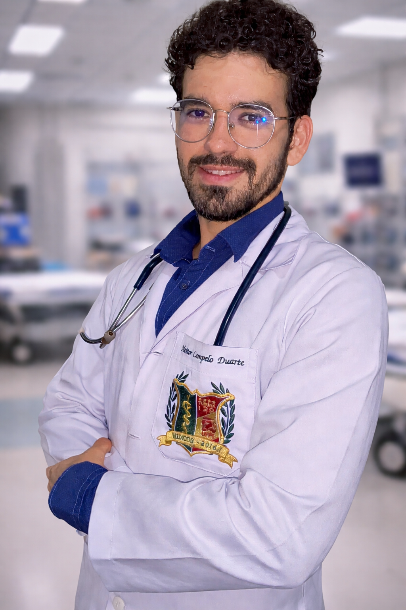

Consultas por videochamada com o Dr. Heitor Campelo Duarte. Sem filas, sem exposilção a ambiente hospitalar, sem deslocamento. Video consultations with Dr. Heitor Campelo Duarte. No waiting rooms, no exposure to hospital environment, no commuting.
Cuidado médico de excelência, onde quer que você esteja. Exceptional medical care, wherever you are.
Médico formado por instituição Federal. Consultas personalizadas com escuta ativa, respeito e cuidado. Personalized consultations with active listening, respect and care.
Atendimento no mesmo dia. Urgências não esperam a disponibilidade do ambulatório. Atendimento todos os dias, incluindo finais de semana e feriados. Medical care today. Emergencies don't follow a schedule. Available any day, including weekends and holidays.
Atestado médico e renovação sem sair de casa, sem exposição a ambientes hospitalares. Por videochamada via Whatsapp. Via video call on Whatsapp. No need to leave home or visit a hospital.
Principais queixas e sintomas tratados nas consultas online. Main complaints and symptoms treated in online consultations.
Médico da UFPE com experiência em urgência e emergência, agora também disponível online. Physician with experience in urgent and emergency care, now also available online.

O Dr. Heitor Campelo Duarte é médico formado pela Universidade Federal de Pernambuco com sólida experiência em urgência e emergência. Ao longo de sua trajetória, atuou em prontos-socorros, unidades de pronto atendimento (UPAs) e hospitais privados, desenvolvendo uma visão clínica apurada para diagnóstico ágil e tratamento eficaz. Dr. Heitor Campelo Duarte is a physician who graduated from the Federal University of Pernambuco and has extensive experience in urgent and emergency care. Throughout his career, he has worked in emergency departments in both private and public hospitals, developing sharp clinical judgment for fast diagnosis and effective treatment.
Seu compromisso é com a saúde e o bem-estar de cada paciente. Ele tem especial interesse em comunicação, oferecendo um atendimento técnico especialmente empático e acessível. He is committed to the health and well-being of each patient. He is fluent in English, Spanish and has a B2 level on French, Italian and Dutch. His communication skills allow for an empathetic care, making technical decisions clear for the patient.
Consultas completas por videochamada, com documentos médicos digitais com a mesma validade legal de documentos físicos. Full consultations via video call, with digital medical certificates
Atendimento médico de urgência sem sair de casa. Urgent medical care at your home.
Atendimento para sintomas agudos: febre, dor intensa, mal-estar, infecções e outros. O médico avalia, orienta e prescreve quando necessário. Tire todas as suas dúvidasFor acute symptoms: fever, severe pain, general malaise, infections and more. The doctor evaluates, advises and prescribes when needed.
Duração média: 20 a 30 minutos Duration média: 20 to 30 minutesAtestados médicos digitais com validade legal, emitidos após avaliação clínica. Aceitos para justificativa de ausência no trabalho ou escola.Legally valid digital medical certificates, issued after clinical evaluation. Accepted for work or school absence justification.
Com assinatura digital With digital signature(Blocos azuis (B) e amarelas (A) não podem ser assinadas digitalmente)(B and A type cannot be signed digitally)
Renovação conforme avaliação clínica. Assinatura eletrônica, aceitas em todo o Brasil. Renewal or transcription based on clinical evaluation. Digital signature, accepted throughout Brazil.
Válida em todo território nacional Valid nationwide in BrazilNão sabe se precisa ir ao pronto-socorro? O Dr. Heitor avalia seus sintomas e orienta o melhor caminho: tratamento domiciliar, medicação ou encaminhamento presencial.Not sure if you need to go to the ER or how the Brazilian health system works? Dr. Heitor assesses your symptoms and recommends the best course: home treatment, medication, or in-person referral.
Decisão informada e segura Informed and safe decision-makingPedidos de exames laboratoriais e de imagem quando clinicamente indicados, com orientação sobre os resultados em consulta de retorno.Lab and imaging test orders when clinically indicated, with guidance on results during a follow-up consultation.
Laudos e pedidos digitais Digital orders and reportsDisponível todos os dias das 10h-17h — incluindo feriados. Available everyday from 10am to 05pm — including holidays.
A consulta será realizada por videochamada via Whatsapp (Vias alternativas podem ser usadas se você precisar). The appointment will take place in a videocall via Whatsapp (Alternatives can be arranged if you need).
Valor: R$ 100,00Price: R$ 100,00
Blocos azuis (B) e amarelos (A) não podem ser assinadas digitalmente.B- and A-types certificates cannot be signed digitally
Valor: R$ 75,00Price: R$ 75,00
Valor: R$ 50,00Price: R$ 50,00